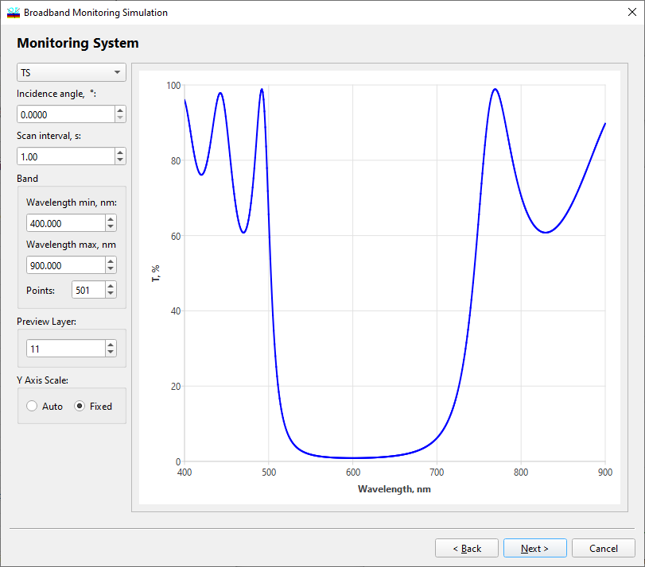

Broadband Monitoring Simulation - Monitoring System
Broadband Monitoring Simulation - Monitoring System
Navigation: OptiLayer Menu Commands > Analysis Menu > Broadband Monitoring Simulation >
Broadband Monitoring Simulation - Monitoring System
` <broadband_pars_devs.html>`__ ` <broadbandmonitoringsimulatio.html>`__ ` <broadmonsim_sigerrors.html>`__

At the third step of the dialog, the user should specify parameters of a simulated online monitoring device in accordance with those of a real monitoring device. The type of spectrophotometric measurements (reflectance or transmittance) is specified in the upper entry field. The next field is used to specify the angle of light incidence. The time interval between online data scans is specified in the Scan interval entry field. The Band group of entry fields is used to set the lower and upper boundaries of the spectral region of online measurements as well as the total number of data in each data scan.
The Preview Layer entry field allows the user to select a layer number for previewing an ideal (without errors) monitoring signal at the end of the layer deposition. The Update button simulates a new set of monitoring data.
The Y Axis Scale radio button allows selecting the type of scaling for the preview screen.
See also: